Phase 3A · 26 NPC đã duyệt làm baseline phát triển
Giữ nguyên tranh, atlas và animation. Sáu hình tượng lịch sử phục vụ giáo dục, không phải chân dung hay lời nói được xác thực. Tư liệu chi tiết và điều kiện phát hành thương mại còn chờ rà soát. Thiết bị thật: CHƯA KIỂM THỬ.
Vào thế giới · 26 NPCMa trận quyền và danh tính · QA · Bàn giao kiến trúc Phase 3B
Archive trong thế giới thường, không cần cờ QA
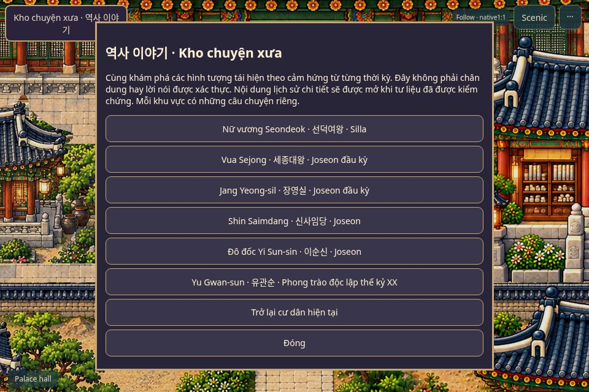
Video ghi thao tác game thật với Sejong, không có QA/historyArtReview trong URL.
Nữ vương Seondeok · 선덕여왕
Giữ tên lịch sử và tranh đã duyệt. Cảm hứng thời kỳ: Silla; chi tiết lịch sử đang kiểm chứng.
Lối vào kiểm tra · npc-history-seondeokQA chỉ đặt Juni tại lối tiếp cận đã kiểm tra, không mở khóa roster.
Ảnh Phaser gốc 1:1 · Crop nhân vật native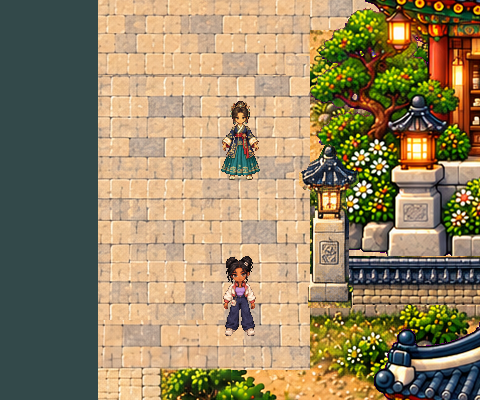
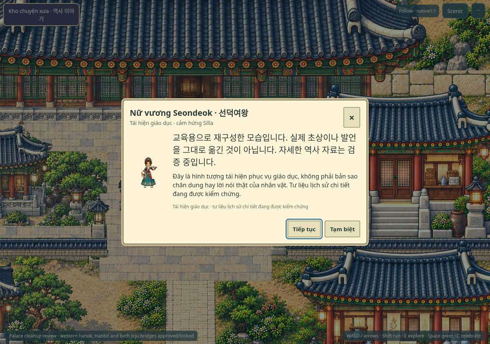
Vua Sejong · 세종대왕
Giữ tên lịch sử và tranh đã duyệt. Cảm hứng thời kỳ: Joseon đầu kỳ; chi tiết lịch sử đang kiểm chứng.
Lối vào kiểm tra · npc-history-sejongQA chỉ đặt Juni tại lối tiếp cận đã kiểm tra, không mở khóa roster.
Ảnh Phaser gốc 1:1 · Crop nhân vật native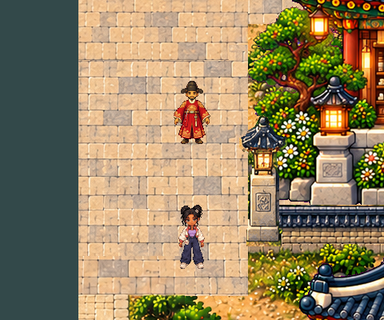
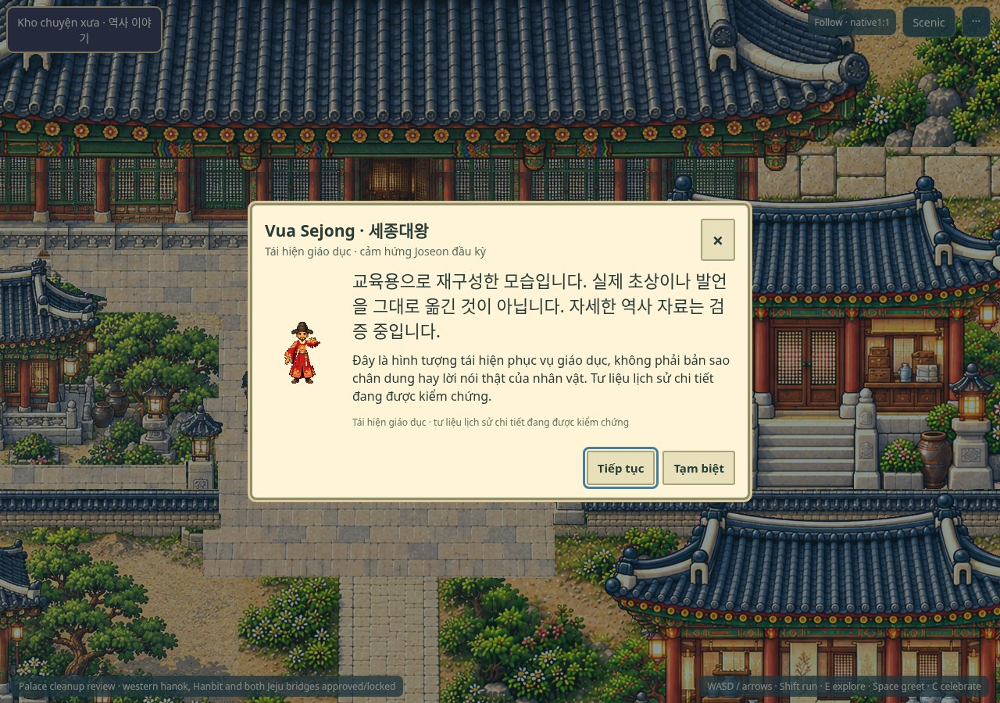
Jang Yeong-sil · 장영실
Giữ tên lịch sử và tranh đã duyệt. Cảm hứng thời kỳ: Joseon đầu kỳ; chi tiết lịch sử đang kiểm chứng.
Lối vào kiểm tra · npc-history-jangQA chỉ đặt Juni tại lối tiếp cận đã kiểm tra, không mở khóa roster.
Ảnh Phaser gốc 1:1 · Crop nhân vật native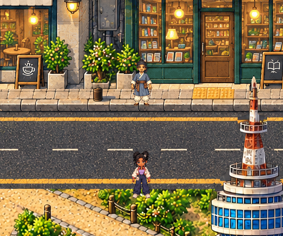
Shin Saimdang · 신사임당
Giữ tên lịch sử và tranh đã duyệt. Cảm hứng thời kỳ: Joseon; chi tiết lịch sử đang kiểm chứng.
Lối vào kiểm tra · npc-history-saimdangQA chỉ đặt Juni tại lối tiếp cận đã kiểm tra, không mở khóa roster.
Ảnh Phaser gốc 1:1 · Crop nhân vật native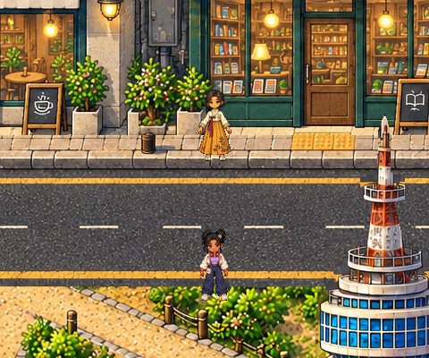
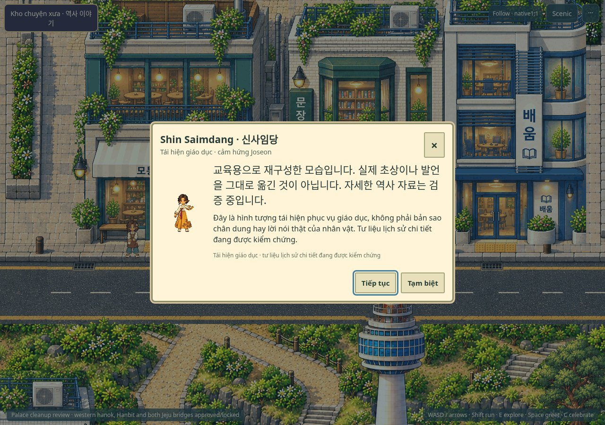
Đô đốc Yi Sun-sin · 이순신
Giữ tên lịch sử và tranh đã duyệt. Cảm hứng thời kỳ: Joseon; chi tiết lịch sử đang kiểm chứng.
Lối vào kiểm tra · npc-history-yiQA chỉ đặt Juni tại lối tiếp cận đã kiểm tra, không mở khóa roster.
Ảnh Phaser gốc 1:1 · Crop nhân vật native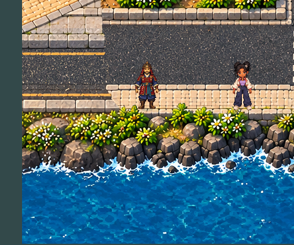
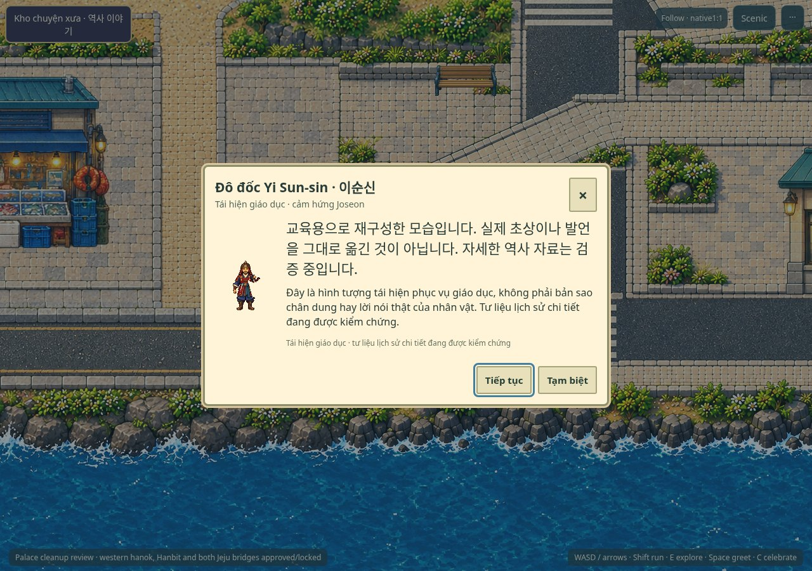
Yu Gwan-sun · 유관순
Giữ tên lịch sử và tranh đã duyệt. Cảm hứng thời kỳ: Phong trào độc lập thế kỷ XX; chi tiết lịch sử đang kiểm chứng.
Lối vào kiểm tra · npc-history-yuQA chỉ đặt Juni tại lối tiếp cận đã kiểm tra, không mở khóa roster.
Ảnh Phaser gốc 1:1 · Crop nhân vật native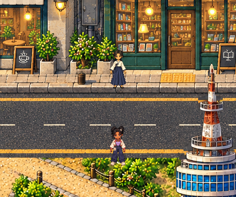
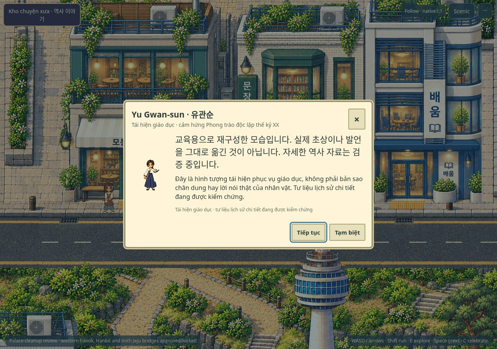
Chỉ bàn giao kiến trúc Phase 3B; chưa triển khai. Không merge main hoặc deploy.